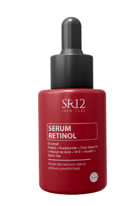

Face Care
Serum Retinol
Serum dengan kandungan utama Retinol, Hyaluronic Acid,
Niacinamide dilengkapi bahan antiiritan alami yang menjaga
kesehatan kulit dan mencegah iritasi.
Kelebihan Serum Retinol SR12:
• Sediaan serum mengandung Retinol dan bahan aktif herbal alami
• Membantu mencerahkan wajah
• Mengandung Ekstrak Greentea dan Vitamin E sebagai antioksidan
• Membantu mengatasi jerawat
• Mencegah proses penuaan dini pada kulit
• Melembabkan kulit wajah
BPOM: -
Ukuran: 20 ml
Ukuran: 20 ml
Rp 147.000